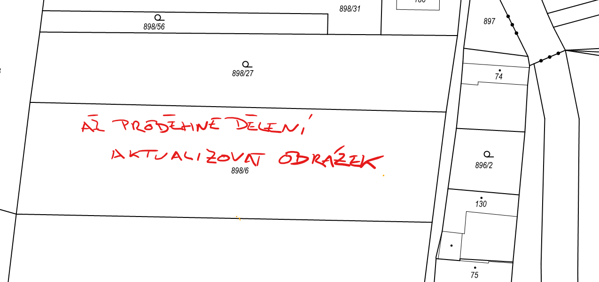

Popis
DOPLŇ POPIS POZEMKU...


Základní informace
- Velikost: parcela č. 1 - 1475 m² parcela č. 2 - 1793 m² respektive 1474 m²
- Poloviční podíl na společné přístupové cestě
- Typ: stavební pozemek
- Sítě: elektřina, vodovodní přípojka, optický kabel
Popis
Nabízíme k prodeji dva slunné stavební pozemky v klidné obci Tetov, situované v Pardubickém kraji. Tyto pozemky představují ideální příležitost nejen pro výstavbu rodinného domu, ale také pro rekreační využití – například jako místo pro víkendový únik z města či vybudování chalupy.
Oba pozemky jsou plně zasíťované – k dispozici je elektřina, vodovodní přípojka i optický kabel, což výrazně usnadňuje a urychluje realizaci stavby. Součástí prodeje je také podíl na příjezdové cestě, zajišťující pohodlný a bezproblémový přístup.
Obec Tetov je menší, velmi klidná lokalita s přibližně 163 obyvateli, která nabízí příjemné bydlení v blízkosti přírody, daleko od ruchu velkých měst. Právě díky svému charakteru je tato lokalita ideální jak pro trvalé bydlení, tak pro rekreaci a odpočinek.
Velkou výhodou je také výborná dopravní dostupnost – nájezd na dálnici D11 je vzdálen pouhých 7 minut, do Prahy na Černý Most se dostanete přibližně za 43 minut a do Pardubic nebo Hradce Králové zhruba za 30 minut.
Pokud hledáte místo pro svůj budoucí domov nebo klidné zázemí pro rekreaci v tiché a slunné lokalitě s výbornou dostupností, tyto pozemky jsou skvělou volbou. Pro více informací nebo sjednání prohlídky nás neváhejte kontaktovat.
Kontakt
Jan Novák
Telefon: +420 608 608 608
Email: stavebni.pozemky@stavebni.pozemky